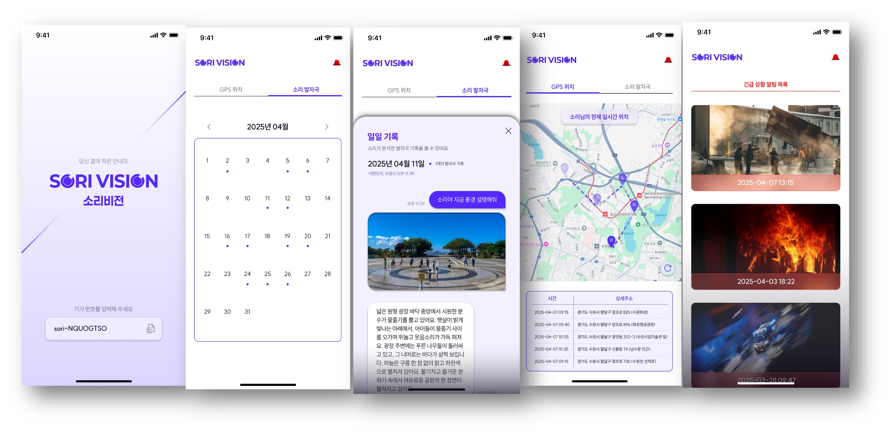
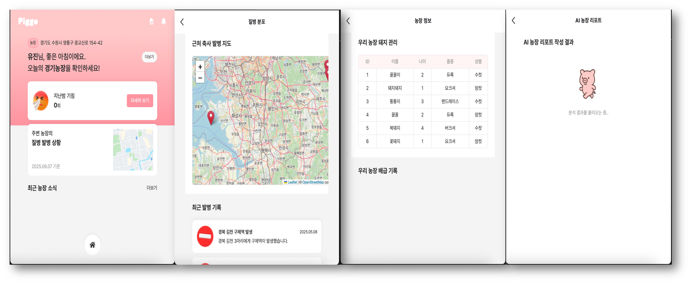
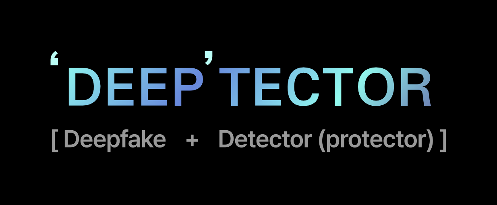
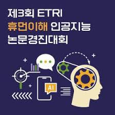
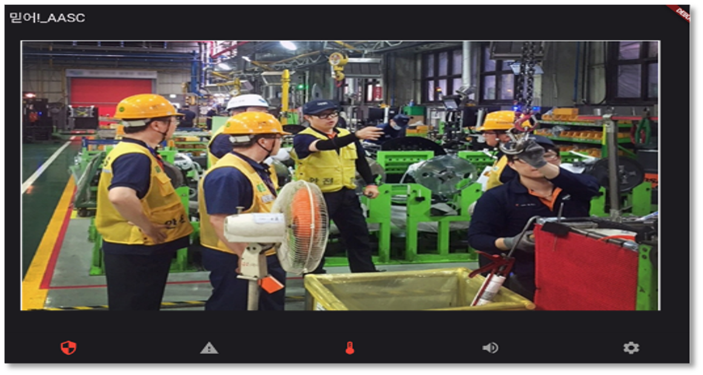

Seungeun Kang
Undergraduate Student at Kyonggi University
About Me
Greetings! I'm Seungeun Kang, an undergraduate student majoring in Computer Engineering at Kyonggi University. My dream is to be an "engineer who creates useful things for everyday life". Also, my motto is "Better than Best" and I'm always eager to learn.
Research Interests
I believe that "Human-Computer-Interaction with LLMs & Mobile Computing" is the cloest thing to my dream. Also, I really enjoy the process -- 1) propose novel solutions with computing technology 2) implementing services 3) organizing and writing paper about them -- to solve real-world problems. In other words, I enjoy "coding"!
Education
B.S. in Computer Engineering
Mar. 2020 ~ Feb. 2026 (Expected)Kyonggi University - Suwon, Republic of Korea
GPA: 4.38/4.50 (Major GPA: 4.40/4.50)
Experience
KAI Purdue Summer Program
Jun. 2025 ~ Aug. 2025- Visiting Scholar at Purdue University, sponsored by Korean government(IITP)
- Research topic : HCI, Mobile Computing, Wearable Healthcare
SNU Cognitive Computing Lab
Mar. 2025 ~ May. 2025- Undergraduate Researcher at Seoul National University
- Research topic : HCI, QA models, Multimodal Emotion Recognition
ETRI Social Robotics Lab
Jan. 2025 ~ Feb. 2025- Internship at Electronics and Telecommunications Research Institute
- Research topic : HCI, Image De-Identification, VLMs
LOTTE INNOVATE Tech. AI Team
Jul. 2024 ~ Aug. 2024- Internship at LOTTE INNOVATE, LOTTE
- Research topic : Text to Image Generation, CLIP
KGU Smart IoT Lab
Jul. 2023 ~ Dec. 2024- Undergraduate Researcher at Kyonggi University
- Research topic : Mobile Computing, LLMs
Publications
International Conferences
-
S Kang, J Kim, N Kim*
-
S Kang, N Kim*
Domestic Conferences(Korean)
-
S Kang, E Park, G Park, J Park, K Park, Y Moon, N Kim*
Projects & Competitions
USWD-Net
USWD-Net : Ultrasonic Based Wildlife Detection Network

SORIVISION
SORIVISION : All-in-one solution connecting blind individuals and their loved ones

PIGGO
PIGGO : Smart Solution for connectiong livestock farming

DEEPTECTOR
DEEPTECTOR : Vision-based, real-time deepfake detection platform

ETRI Human Understanding AI Paper Challenge 2024

BELIEVE
BELIEVE : Vision-based edge intelligence system for safety management in industrial environments
Volunteering & Teaching
Teaching Assistant, National center of excellence in software
Kyonggi University | Sep. 2024 ~ Dec. 2024
Mentored in various academic and software-related activities.
Basic Tutoring : Student-to-Student tutoring
Kyonggi University | Mar. 2024 ~ Jun. 2024
Mentored JAVA Programming, Data Structure
SAP-solve it together mentoring
SAP, JAKorea | Aug. 2023 ~ Sep. 2023
Mentored Micro:bit, Arduino
2023 Gyonggichango mentoring
JAKorea | Jul. 2023 ~ Aug. 2023
Mentored Mobile app programming
Scholarships & Awards
-
Academic Excellence Scholarship (6 Semesters)
Kyonggi University, Sep. 2020 ~ Mar. 2025
Received the Academic Excellence Scholarship for five semesters—Fall 2020, Fall 2023, Spring 2024, Fall 2024, Spring 2025 and Fall 2025—in recognition of consistently outstanding academic performance throughout the undergraduate program.
-
Third(Bronze) Prize - 2025 KIIT Summer conference
Korean Institute of Information Technology, Jun 2025
Received the Best Paper Award at the Korean Institute of Information Technology Summer Conference for excellence in research and presentation.
-
Third Prize - Advanced Capstone Design Competition
Kyonggi University, Jun 2025
Earned third prize for a creative solution in the university-wide Advanced Capstone Design Competition.
-
Excellence Award - Khuthon 2025
National Center of Excellence in Software, May 2025
Recognized for outstanding performance and innovation during the Khuthon 2025 hackathon event.
-
Second Prize – 2024 Capstone Design & AI Hackathon
Korean Association of Computer Education, Oct. 2024
Awarded second prize for an AI-driven capstone project presented during the national AI Hackathon hosted by the Korean Association of Computer Education.
-
Second Prize – Basic Capstone Design Competition
Kyonggi University, Jun. 2024
Earned second prize for a creative solution in the university-wide Basic Capstone Design Competition.
-
First(Gold) Prize - 2024 KIIT summer conference
Korean Institute of Information Technology, May 2024
Received the Paper Award at the Korean Institute of Information Technology Summer Conference for excellence in research and presentation.
Skills
Programming & Technical Skills
Languages: Python, Java, C, C++, C#, LaTeX
Frameworks & Tools: PyTorch, TensorFlow, Unity, Flutter, FastAPI
Systems & DevOps: Linux, Docker
Language Skills
-
KoreanNative
-
EnglishTEPS 363 (High Intermediate Level)
-
JapaneseBasic Level
Certifications
-
Test of Practical Competency in IT Level 4Score: 722 | IITP, May 2025
-
Certified Software Test Specialist – Foundation LevelTTA, Mar 2023